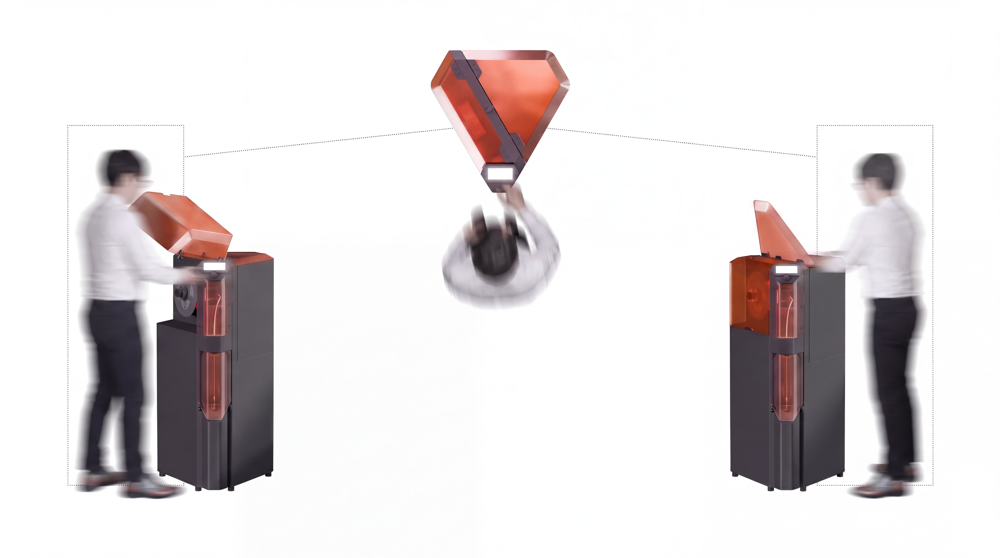
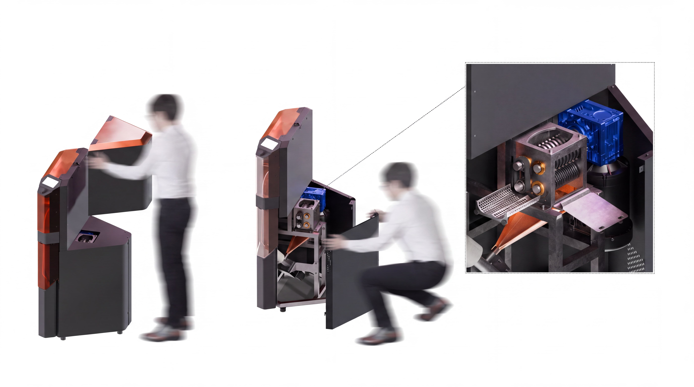
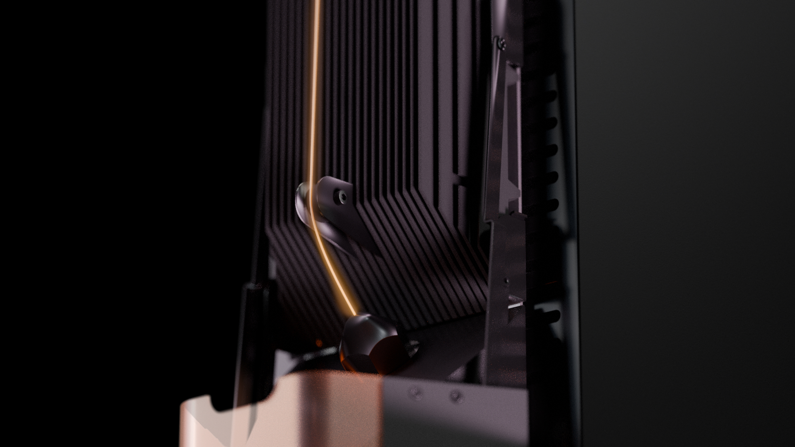
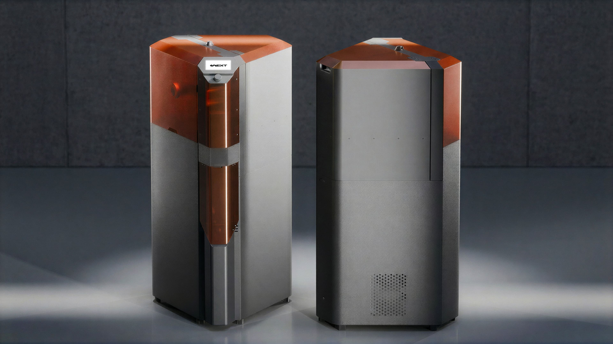

10EXT | Politecnico di Milano

Infinite Additive: Closing the Loop
10EXT is a project developed during my first year of the Master's degree at Politecnico di Milano, with the goal of engineering and designing a machine capable of automating the entire polymer recycling process carried out by small businesses to obtain spools ready for 3D printing.

Closing the loop on additive manufacturing for high-volume production hubs. The goal was to consolidate shredding, extrusion, and winding into a seamless all-in-one ecosystem, tailored to transform professional waste into a premium, 100% recycled resource.

One machine, zero waste. 10EXT consolidates the complexity of material recovery into a streamlined industrial solution. It empowers manufacturing hubs to master their own supply chain, reclaiming every gram of material with surgical precision.

Steel Skeleton
A heavy-duty steel skeleton provides the mechanical foundation. Wrapped in refined sheet metal panels, the architecture harmonizes industrial-grade protection with effortless serviceability.

User Experience
A functional geometry segmenting the process into three intuitive stages: Material Input, UI Control, and Spool Management.
360° ergonomics for a seamless user journey.

Maintenance

Extrusion

